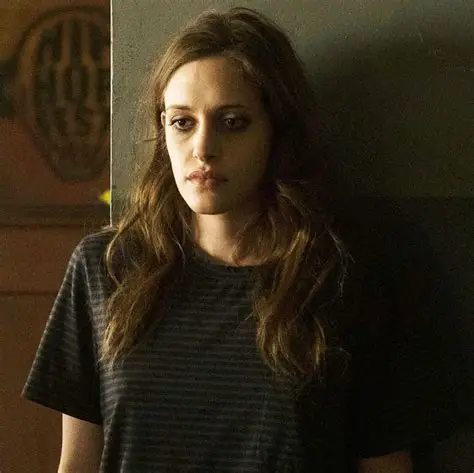
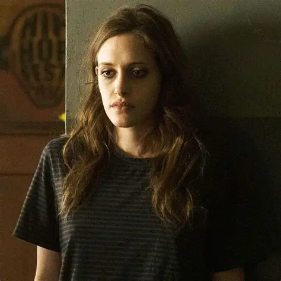

SINOPSIS
Mr. Robot sigue a Elliot Alderson, un joven ingeniero de ciberseguridad de día y un hacker justiciero de noche. Elliot se encuentra en una encrucijada cuando el misterioso líder de un grupo de hackers clandestinos, conocido como "fsociety", lo recluta para destruir la misma corporación que le pagan por proteger. Atormentado por sus demonios personales y un trastorno de ansiedad social, Elliot lucha por discernir lo que es real mientras intenta liderar una revolución digital.
GALERÍA


 



FSOCIETY
"Somos fsociety. Somos la única cosa real. Somos todo o nada." Fsociety es el catalizador de la revolución, un grupo de hackers con el objetivo de derribar a E Corp, el conglomerado multinacional que, en su opinión, controla el mundo. Su símbolo es la máscara inspirada en el Monopolio y su lema es un llamado a la acción contra la tiranía corporativa.